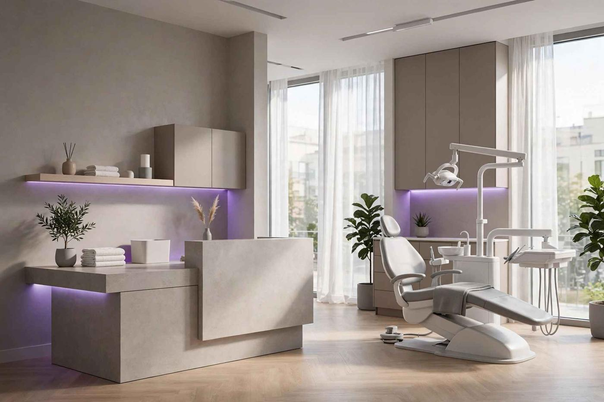

Fictional host business · the page underneath the add-on
Gentle, honest dentistry in Gulberg.
Pearl & Vale is the sample business on this demo page. Its services, prices and hours below are the only facts the chat widget in the corner can talk about — try to catch it out.
See treatments & prices How the add-on works

Treatments & prices
This list is rendered from the same business-data object the chatbot answers from — change a price here and the bot's answer changes with it. That is the whole point of the add-on.
Opening hours
Visit & contact
Address: 14-B Main Boulevard, Gulberg III, Lahore
Parking: Free patient parking behind the studio, off Service Lane 4 — tell the guard you are visiting Pearl & Vale.
Phone: 042 3577 0142 · WhatsApp: 0321 555 0142
Email: care@pearlandvale.example
Payments: Cash, debit and credit cards, JazzCash and EasyPaisa.
Cancellations: Free cancellation or rescheduling up to 4 hours before your appointment.
The product on this page · Portfolio Queue #12
The FAQ Chatbot Add-On, live on this page
The violet chat widget in the bottom-right corner is the add-on being sold. On this demo it runs as an honest, rule-based FAQ bot. Demo: rule-based FAQ bot — a production add-on connects to an AI model + the business's own data. Nothing you type leaves your browser.
Try to catch it out
Ask it the opening hours, a price, or where to park — it answers from Pearl & Vale's own data. Then ask it something off-scope, like the weather or a rival clinic: it will say plainly that it can't help with that, and offer a person instead. That honesty is a feature, not a limitation.
1
We load the business's facts
Services, prices, hours, address, policies — one data object, agreed with the business. The bot can only say what that object says.
2
The widget answers & captures
Visitors tap quick-reply chips or type. Known questions get instant answers; a two-question callback flow captures name and a validated Pakistani mobile number.
3
Leads land in the sheet
Every callback request and WhatsApp hand-off is written to the business's lead sheet with a reference. See this demo's log — it fills up as you use the chat.
What this demo bot can and cannot do — stated plainly
- Answers 13 FAQ topics: hours, location, prices, individual treatments, services, booking, parking, contact, offers, payments, cancellation, human help, greetings.
- Matches exact phrases, keyword variants and partial questions; when two topics match, the higher score wins and ties resolve by a fixed priority (human help first).
- Captures callback leads in-chat with phone validation and a reference number.
- Anything outside the FAQ scope gets an honest refusal plus a human hand-off — never an invented answer.
What it is not
- It is not an AI in this demo: no model reads your words, and it does not understand free text beyond its keyword matching.
- It cannot check live appointment availability, take payments, or give medical advice.
- The production add-on connects the same widget to an AI model plus the business's own data and booking system — the scope grows, the honesty rules stay.
- Lead capture here is a local stub in your browser. Production wiring writes to the business's Google Sheet instead — same columns, same references.
Add-on scope tiers
Demo scope description — add-on pricing follows Pricing v3; no figures are quoted on this demo page.
FAQ
The widget on an existing website, loaded with the business's agreed facts: services, prices, hours, policies. Quick-reply chips, honest fallback, WhatsApp hand-off.
FAQ + Leads
Everything in FAQ, plus the in-chat callback flow with validated phone capture, references, and leads written to the business's Google Sheet.
FAQ + Leads + Booking hand-off
Everything in FAQ + Leads, plus a guided hand-off into the business's booking flow, so a chat that starts as a question can end as an appointment.